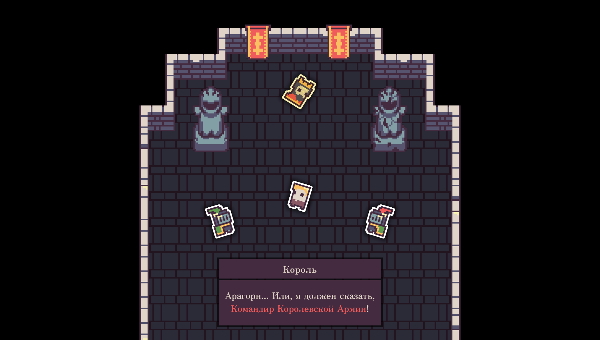
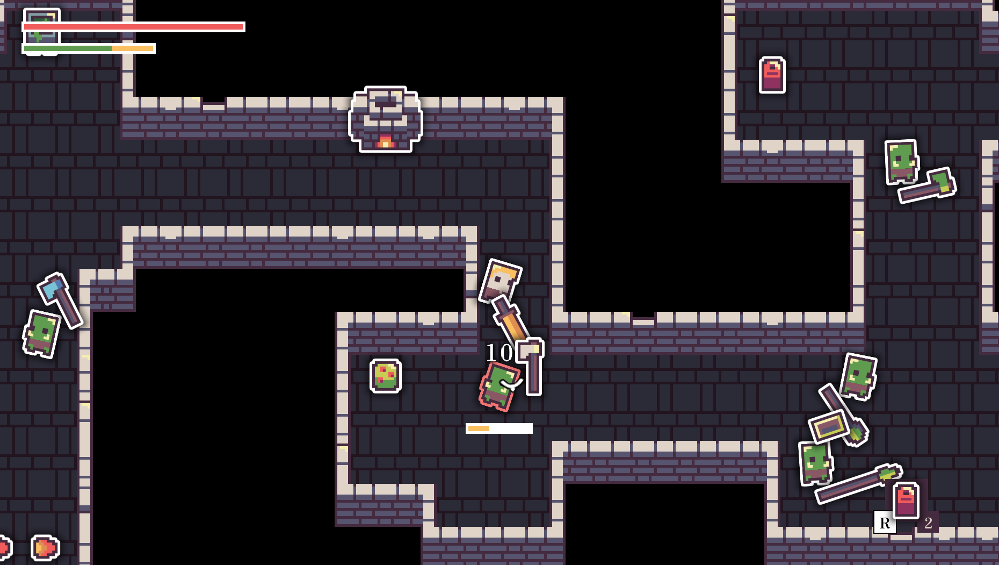
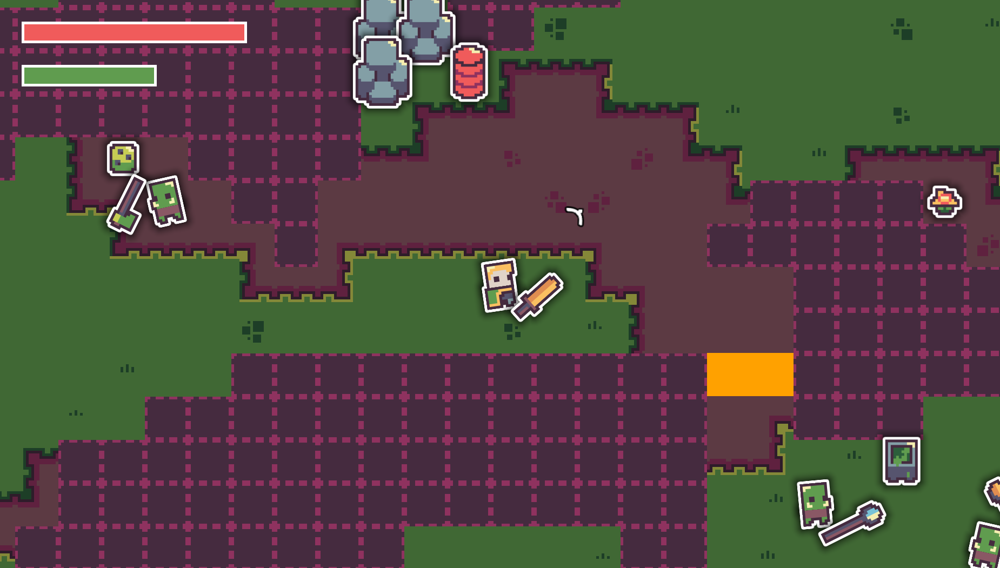

Сменить на Русский 🇷🇺
Aleksei Chistov
telegram: @agechistov | agechistov@gmail.com
Sometimes I do gamedev projects. The information about them is gathered here.
Action RPG game in-development — C++ (12/2024 — present)



«An action RPG epic adventure, where you have to use the advantages and combinations of the elements of nature, adapting the selection of equipment along the way»
Decreasing Development Busywork
In this video I demonstrate techniques that make my life as a developer easier.
Show more details
Techniques:
- Building and launching the game by pressing the F5 button in my code editor.
- A system for recording and playing back player's actions.
- Hot code reloading via DLL.
How this makes my life easier:
- Example 1: Someone else is playing my game ⇒ it crashes ⇒ I play back the recording of their actions. I don't need to be asked "what did you do to make the game crash?"
- Example 2: I encounter a bug ⇒ (I already have a recording of my actions) ⇒ I run the debugger every time and the game plays the recorded actions automatically.
- Example 3: I need to edit some values in the game ⇒ I change the C++ code a few times and reload the DLL. Often there is no need to restart the game.
- This does not replace testing. It complements it.
Jonathan Blow and Casey Muratori point out the importance of reducing the time spent on busywork:
- Video. Handmade Hero Day 023 — Looped Live Code Editing. Casey Muratori demonstrates recording and replaying player's actions, as well as DLL hot reloading.
- Video. Jonathan Blow on scripting languages. In the background you can see Jonathan Blow running tests of his game. It's essentially a playback of a recording of the player's actions.
3D Demo Of Movement Using A Rope — C++ Source (2024)
I worked a bit more in 3D, improved my math skills, and also tried Raylib. It's inspired by Attack on Titan.
3D Donut (2024)

I reinforced the basics of 3D, matrix transformations, linear algebra and programming in C++ without using libraries.
Roads of Horses (10/2023 — 09/2024)


This is a videogame, that I started developing using Unity, C#. Then I started portion it to C++. Inspired by Handmade Hero, I was reinforcing my skills of programming, understanding how CPU, RAM, Rendering, Audio and other stuff works.
Show more projects
The Clocktower Letter – itch.io (2023)


A short platformer game for Metroidvania 21 game jam. Worked as a programmer in a worldwide distributed team of 4.
Other stuff (2016-2023):


Avocado — GitHub. Various studies applied to a platformer game in Unity, C#.


Credited Work
- mod for Terraria by gardenapple — Provided the Extractinator speed up code (C#) (2017)
- VS Code extension by pucelle — Running VS Code's commands on save (TypeScript) (2020)
Other Stuff
Dark Souls 3 Cheat Sheet tool – Reddit (2018)

A tool for tracking progress in Dark Souls 3 (Python, PyQt)
Monster Hunter: World Printable Monsters Weaknesses Booklet – Reddit post, Updated Reddit post (2018, 2021)

A set of images/documents for printing that shows weaknesses of monsters (Python, Pillow)
Thanks to
- Casey Muratori for Handmade Hero and «Clean» Code, Horrible Performance
- Jonathan Blow for JAI playlist
(Updated 2025-03-23)